Nye arter — statiske pladsholdertegninger
16 nye arter tegnet procedurelt (tools/draw_new_species.py) i Primal Earth 32-paletten. Det er statiske pladsholdere : én pose pr. retning, ingen animation. Codex skal lave de rigtige animationsark (se NEW_SPECIES_ART.md). Intet her er koblet ind i spillet.
Lys / mørk baggrund Manifest · Overdragelse til Codex
Spilskala (E, native × foreslået visualScale, vist 2×)
Grå felter er eksisterende arter til sammenligning. T. rex og Spinosaurus vises med visualScale 2.
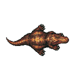
tyrannosaurus (eksisterende, ×2) 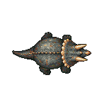
triceratops (eksisterende, ×1) 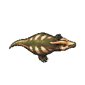
parasaurolophus (eksisterende, ×1) 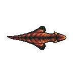
carnotaurus (eksisterende, ×1) 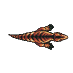
utahraptor (eksisterende, ×1) 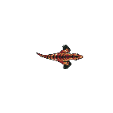
velociraptor (eksisterende, ×1) 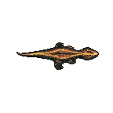
compy (eksisterende, ×1) 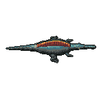
spinosaurus (×2) 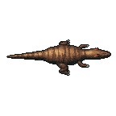
allosaurus (×1) 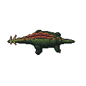
stegosaurus (×1) 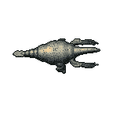
therizinosaurus (×1) 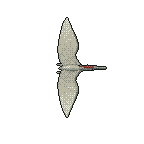
pteranodon (×1) 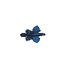
microraptor (×1) 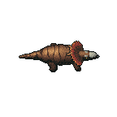
pachyrhinosaurus (×1) 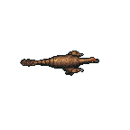
oviraptor (×1) 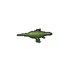
dryosaurus (×1) 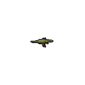
hypsilophodon (×1) 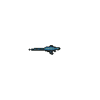
leaellynasaura (×1) 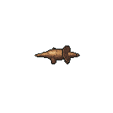
protoceratops (×1) 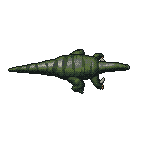
iguanodon (×1) 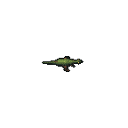
psittacosaurus (×1) 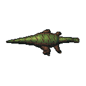
edmontosaurus (×1) 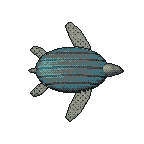
archelon (×1)
Alle tegninger pr. art (2×)
spinosaurus (spilbar) — long crocodile-like snout, tall rust/orange sail, dark teal-grey body, long tail
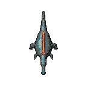
S 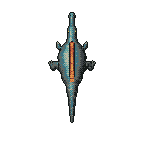
N E 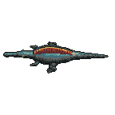
W 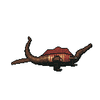
corpse 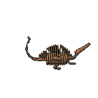
skeleton 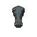
avatar tyrannosaurus E (eksisterende)
allosaurus (spilbar) — large theropod, small rust horn crests above the eyes, tan/brown with dark bands
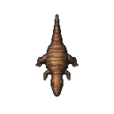
S 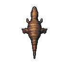
N E 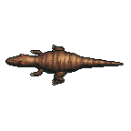
W 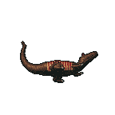
corpse 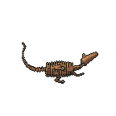
skeleton 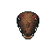
avatar carnotaurus E (eksisterende)
stegosaurus (spilbar) — olive quadruped, two alternating rows of rust plates, four-spike thagomizer, small head
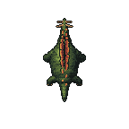
S 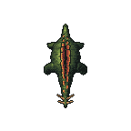
N E 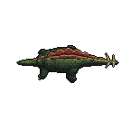
W 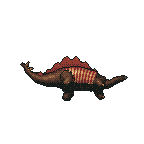
corpse 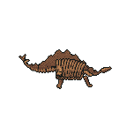
skeleton 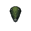
avatar triceratops E (eksisterende)
therizinosaurus (spilbar) — pot-bellied, grey/cream feathers, long neck, small beaked head, long scythe claws
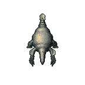
S 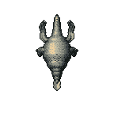
N E 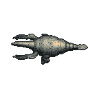
W 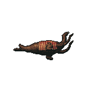
corpse 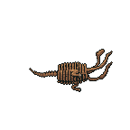
skeleton 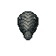
avatar tyrannosaurus E (eksisterende)
pteranodon (spilbar) — pterosaur in flight from above, pale/grey wings, long beak, rust backward crest
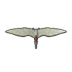
S 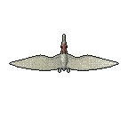
N E 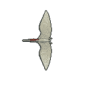
W corpse skeleton avatar
microraptor (spilbar) — tiny four-winged raptor, dark iridescent black/blue/indigo
S N E W corpse skeleton avatar velociraptor E (eksisterende)
pachyrhinosaurus (spilbar) — ceratopsian with a thick flat pale nasal boss (no nose horn), spiked frill
S N E W corpse skeleton avatar triceratops E (eksisterende)
oviraptor (spilbar) — feathered, toothless beak, rounded orange crest, long clawed arms
S N E W corpse skeleton avatar
dryosaurus (vild) — small slender bipedal herbivore, light green/tan
S N E W corpse skeleton avatar
hypsilophodon (vild) — small biped, green-brown with dark stripes
S N E W corpse skeleton avatar
leaellynasaura (vild) — tiny, very long tail, big pale eyes, grey/blue
S N E W corpse skeleton avatar
protoceratops (vild) — small sandy quadruped with frill and beak, no horns
S N E W corpse skeleton avatar
iguanodon (vild) — large olive/grey herbivore with thumb spikes
S N E W corpse skeleton avatar parasaurolophus E (eksisterende)
psittacosaurus (vild) — small biped, parrot beak, quill bristles on the tail, brown/olive
S N E W corpse skeleton avatar
edmontosaurus (vild) — large crestless duck-billed hadrosaur, brown/green
S N E W corpse skeleton avatar parasaurolophus E (eksisterende)
archelon (vild) — giant grey-teal sea turtle, ridged shell, four flippers
S N E W corpse skeleton avatar
Små omgivelsesdyr (4×)
butterfly_0.png butterfly_1.png frog_0.png frog_1.png small_mammal_0.png small_mammal_1.png firefly_glow_0.png firefly_glow_1.png pterosaur_shadow_0.png pterosaur_shadow_1.png millipede_0.png millipede_1.png ash_ember_0.png ash_ember_1.png
Status: prototype_static, production_approved=false, animation_ready=false, runtime_enabled=false.